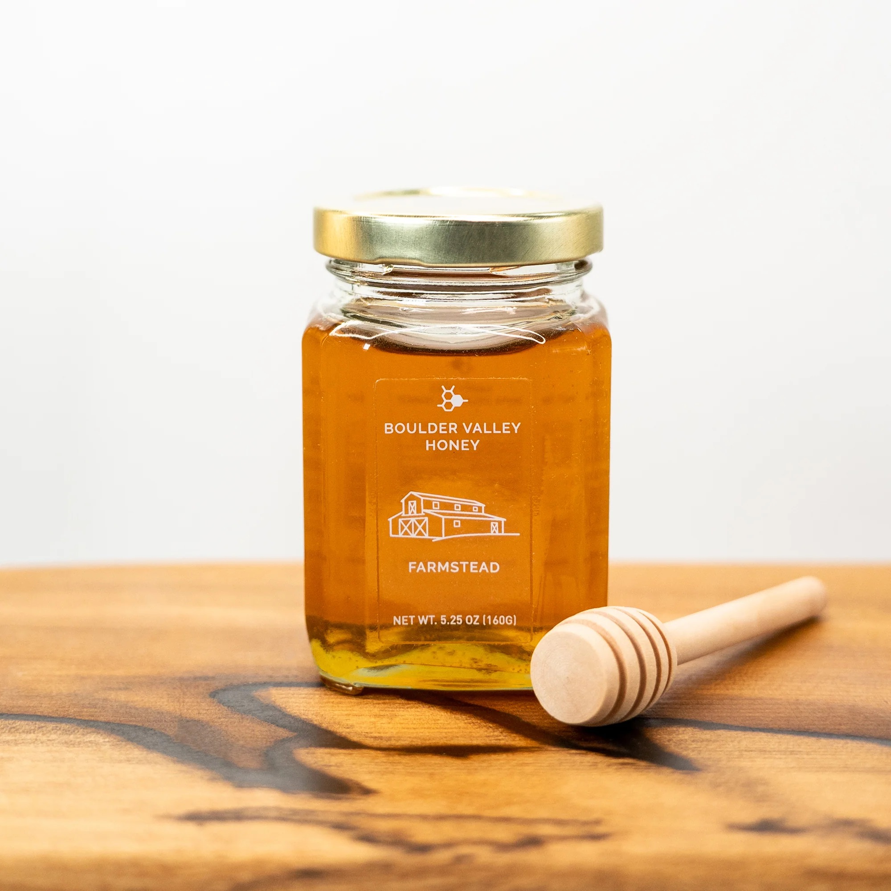
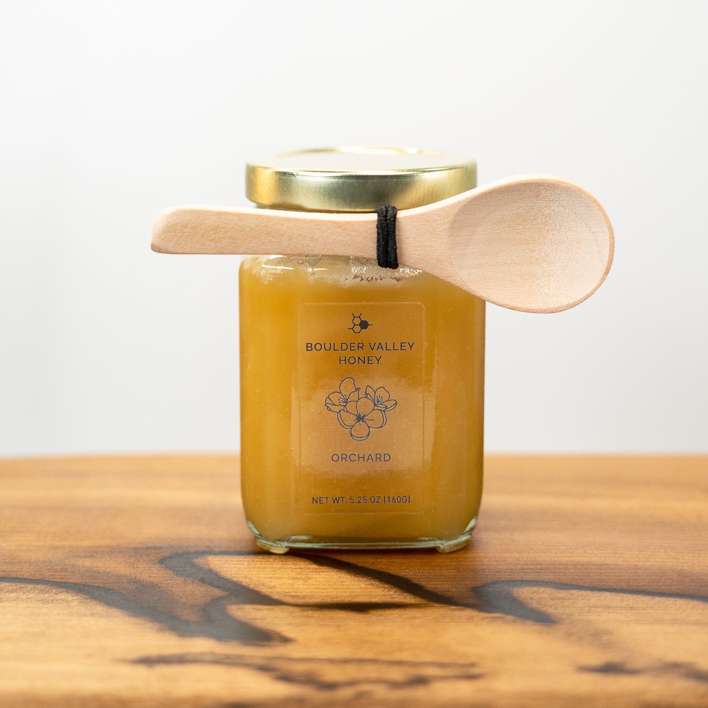
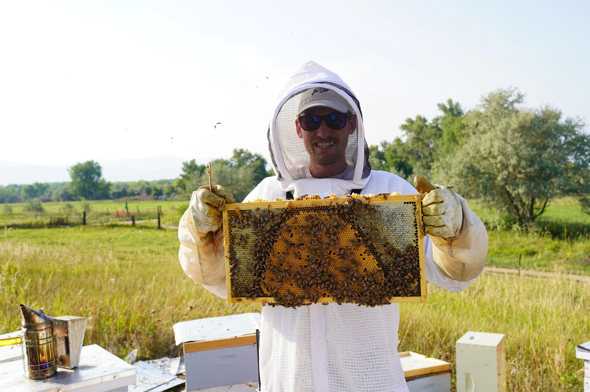

Our Honey Products
Farmstead Honey

From the pastoral farmlands east of Boulder. Bees here forage on bird's foot trefoil, alfalfa, black locust, and other shrubs planted as part of our one-acre Pollinator Power Pathway. Our farmstead also acts as our nursery zone, where we propagate our most successful bees which display resilience, gentle disposition, and healthy behavior.
Orchard Honey

From the base of Mount Sanitas in downtown Boulder. This apiary is located in a unique historic orchard with fruit trees over century old and include apple, cherry, and plum. These bees forage all of downtown Boulder, and condense the delicious nectar of one of the nation's most pollinator-friendly cities into a delicious honey.
Featured Product
Featured: Wildflower Honey
About Us
We are Colorado beekeepers focused on sustainable apiaries that produce local honey of the highest quality. Each jar of honey comes with its own story from an interesting season of forage to bears in the yard. Our bees live throughout the foothills and high plains, and have been bred and nurtured for hardiness throughout our dynamic local environs. Our mission is to provide a robust management practice that supports happy and healthy bees that can produce a surplus of delicious honey for all to enjoy. We do this by employing organic and regenerative processes that ensure our bees thrive year over year, including producing our own beehives from Colorado timber and working with local manufacturers to produce environmentally safe packaging on the front range.
